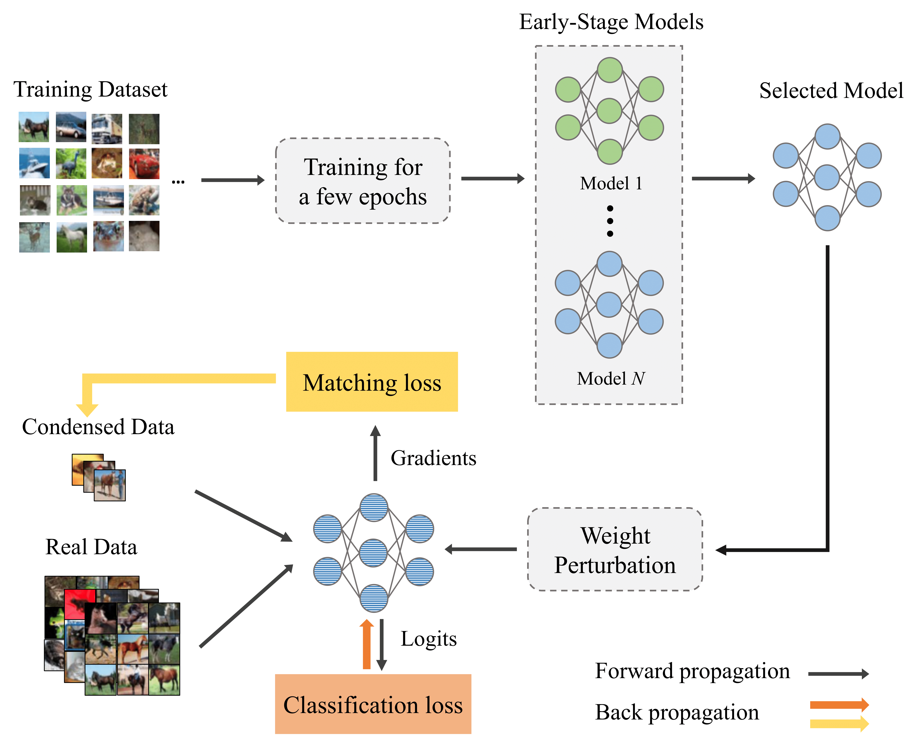

Lei (Max) Zhang


Lei (Max) Zhang
I am a second-year (2024 - ) Ph.D. student at University of California, San Diego supervised by Prof. Julian McAuley.
Previously, I completed my master degree at Zhejiang University in 2024 and bachelor degree at South China University of Technology in 2021.
My research mainly focuses on multimodal models, incluidng unified architecture, reasoning, application with image, video, and spatial intelligence.
News üéâ
- Jun. 2025 - I joined Meta GenAI as a research scientist intern in Menlo Park.
- May. 2025 - Selected as a Notable Reviewer for ICLR 2025.
- Jan. 2025 - Two papers get accepted by ICLR 2025.
- Dec. 2024 - Two papers are accepted by AAAI 2025.
- Sep. 2024 - Start Ph.D. journey at the University of California, San Diego.
- Aug. 2023 - Fair Network Pruning gets accepted by ICCV 2023.
- Mar. 2023 - Efficient Dataset Distillation gets accepted by CVPR 2023 as Highlight.
Publications
Full Publications: Google Scholar
-
Process-driven Image Generation via Interleaved Reasoning

Lei Zhangstrong>, Junjiao Tian, Zhipeng Fan, Kunpeng Li, Jialiang Wang, Weifeng Chen,
Markos Georgopoulos, Felix Juefei-Xu, Yuxiang Bao, Julian McAuley, Manling Li, Zecheng He

-
Audio-Visual LLM for Video Understanding

Fangxun Shu*, Lei Zhang*, Hao Jiang, Cihang Xie
arXiv
Tech report, 2023
-
Filter & Align: Leveraging Human Knowledge to Curate Image-Text Data
Lei Zhang, Fangxun Shu, Tianyang Liu, Sucheng Ren, Hao Jiang, Cihang Xie
arXiv
Tech report, 2024
-
Towards Fairness-aware Adversarial Network Pruning

Lei Zhang, Zhibo Wang, Xiaowei Dong, Yunhe Feng, Xiaoyi Pang, Zhifei Zhang, Kui Ren
arXiv / camera-ready
ICCV, 2023
-
Accelerating Dataset Distillation via Model Augmentation
Lei Zhang, Jie Zhang, Bowen Lei, Subhabrata Mukherjee, Xiang Pan, Bo Zhao, Caiwen Ding, Li
Yao, Dongkuan Xu
arXiv / camera-ready
CVPR, 2023, Highlight
Interests
Multi-modal undestanding, generation, and alignment on efficient training and inference, data recepie: quality vs. quantity, visual tokenizer, etc.
Experiences
Services
Reviewer for CVPR, ECCV, ICCV, ICLR, ICML, AISTATS and ACL ARR.